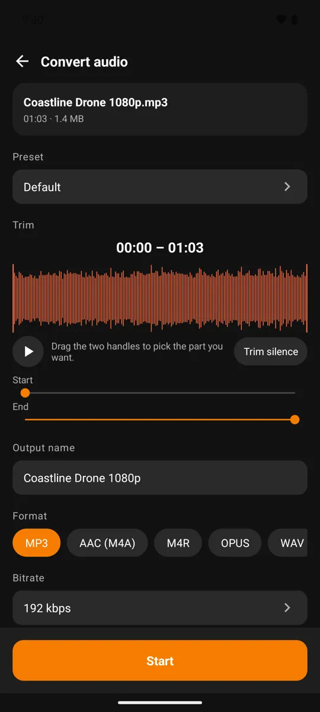

Kiểm tra thiết lập Last used trước khi tách audio
Sau một lần xuất, các thông số gần nhất giúp bạn làm lại việc tương tự nhanh hơn. Nhưng nếu đổi từ bản ghi giọng sang âm nhạc, thiết lập cũ có thể không còn phù hợp. Kiểm tra Last used là bước ngắn giúp tránh phải xuất lại cả tệp.
Bạn sẽ làm được gì?
Kiểm tra cấu hình được dùng gần nhất trong Video MP4 to MP3 Converter để tránh xuất nhạc với preset dành cho lời nói hoặc chia sẻ.
Các bước thực hiện
- Mở nguồn mới và xem các tùy chọn chuyển đổi hiện tại.
- Đối chiếu định dạng, bitrate và số kênh với mục đích lần này.
- Chọn lại một profile phù hợp nếu trước đó bạn dùng cấu hình khác.
- Kiểm tra fade, chuẩn hóa và khoảng cắt rồi mới bắt đầu xuất.

{kind=link}

Thiết lập thuận tiện cần đi cùng thói quen kiểm tra
Một bản chia sẻ nhẹ có thể dùng mono và bitrate thấp, trong khi bản nghe nhạc cần lựa chọn khác. Nhìn mỗi tên MP3 chưa đủ nhận ra sự khác biệt. Các hiệu ứng đã bật cũng có thể ảnh hưởng kết quả dù bạn không thay đổi chúng ở lần mở hiện tại.
Câu hỏi thường gặp
Last used có nghĩa là một profile tự tạo riêng không?
Không nhất thiết. Trong luồng profile, app ghi cấu hình vào thiết lập dùng gần nhất; đừng mặc định đó là thư viện preset cá nhân có tên riêng.
Trước khi bắt đầu
Các lựa chọn nâng cao, chất lượng xuất hoặc số tệp trong một lần có thể dùng credit hoặc Premium. Kiểm tra thông tin ngay trên màn thao tác trước khi chạy; ảnh giao diện có thể khác nhẹ theo phiên bản và ngôn ngữ.
Việc xử lý media diễn ra trên thiết bị. Các dịch vụ như quảng cáo và mua hàng có thể dùng mạng; xem chính sách quyền riêng tư để biết thêm.
Mở Video MP4 to MP3 Converter trên Google Play